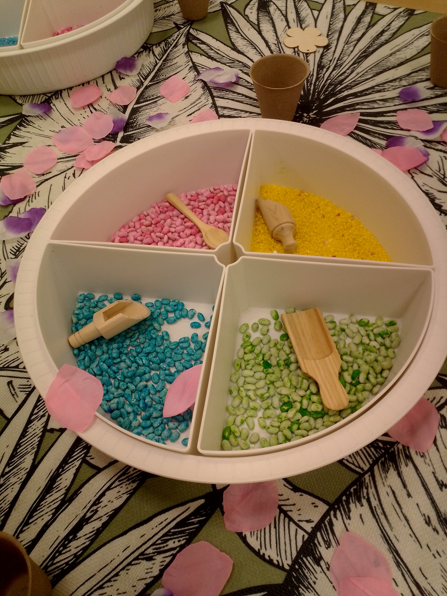

LEARNING ENGLISH
Diseño materiales manipulativos que convierten el aprendizaje del inglés en una experiencia visual, divertida y significativa.

Graduada en Magisterio Infantil con mas de diez años de experiencia en el sector educativo.
Soy Araceli Felipe Osuna, maestra de Educación Infantil con formación universitaria y técnica especializada en el ámbito educativo.
Mi experiencia me ha permitido conocer de cerca las necesidades de los niños y las niñas durante sus primeras etapas de desarrollo.
Me considero una persona responsable, cercana, creativa y comprometida con crear espacios seguros, afectivos y estimulantes donde cada niño y niña pueda aprender y desarrollarse a su propio ritmo.
Creacion propia de recursos educativos adapatados a diferentes edades y necesidades educativas del aula.
Diseño materiales manipulativos que convierten el aprendizaje del inglés en una experiencia visual, divertida y significativa.

Propuestas visuales y participativas que permiten a los niños y las niñas ampliar, escuchar y reconocer vocabulario mientras juegan.
Creacion ?
Creo espacios de aprendizaje donde cada material tiene un proposito y cada propuesta nace de la curiosidad de los niños y las niñas.
Diseño experiencias manipulativas para trabajar diferentes conceptos siempre desde el juego y la experimentación.
Habilidades desarrolladas a través de mi formación y experiencia profesional en Educación Infantil.
Cuidado y acompañamiento durante las primeras etapas.
Diseño de actividades lúdicas y educativas.
Acompañamiento del desarrollo integral del niño.
Colaboración con equipos educativos y profesionales.
Comunicación cercana con familias y profesionales.
Fomento de la autonomía y confianza de los niños.
Si estás buscando una profesional dedicada a la Educación Infantil, estaré encantada de conocerte.